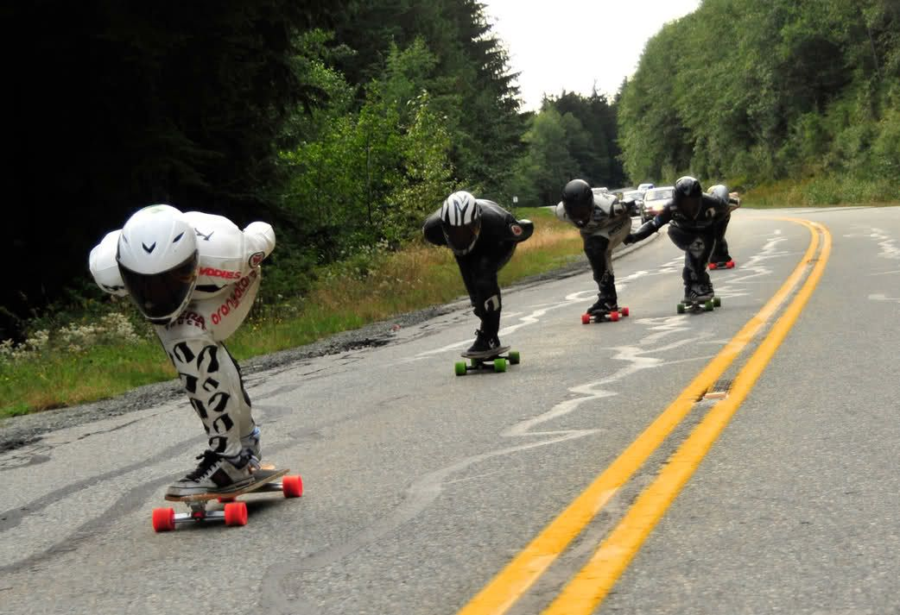
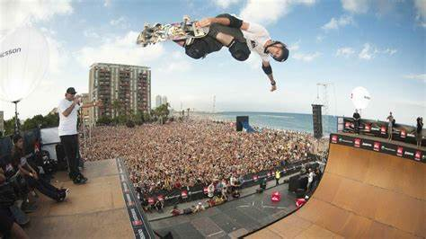

Grande clássico na noite de hoje
A noite desta quinta-feira (10) será de um grande jogo pelo Campeonato Paulista. São Paulo e Palmeiras fazem o clássico "Choque-Rei", um dos maiores do Brasil e que pode determinar, ao menos ao final da rodada, quem tem a melhor campanha geral do Paulistão, que caminha para as partidas finais da fase de grupos.
Ler mais

Noite Superbowl
O Super Bowl de 2023, evento esportivo que anualmente para os EUA, já tem data, horário e seus dois times protagonistas definidos. A final da liga profissional de futebol americano (NFL), acontece no dia 12 de fevereiro no State Farm Stadium em Glendale, Arizona.
Ler mais

Notícia sobre a NBA
O atual campeão, Milwaukee Bucks, faz a cerimônia de entrega dos anéis aos jogadores e inaugura o banner comemorativo na sua arena após 50 anos do último título. Depois, tem pela frente o estrelado Brooklyn Nets, ainda sem Kyrie Irving, protagonista da pré-temporada por maus motivos.
Ler mais

Brasileiro de Longboard Downhill
O Campeonato Brasileiro de Longboard Downhill e Downhill Slide foi realizado pela Confederação Brasileira de Skate (CBSk) em parceria com a Federação Paulista de Skate (FPS), a Vampiros do Asfalto e a Prefeitura de São Pedro. O evento contou com colaboração da Crazynboard, Curva de Hill, Edem Skate, Esze, Hocks, Six Truck
Ler mais

Circuito Brasileiro de Surfe
A WSL divulgou o calendário de 2023 do Campeonato Mundial de Surfe. A novidade é a volta da piscina de ondas de Kelly Slater na Califórnia, Estados Unidos. A etapa substitui G-Land, na Indonésia. De resto, o calendário segue o mesmo que 2022, com a primeira etapa em Pipeline no Hawaii e com a grande final acontecendo em Trestles, na Califórnia.
Ler mais

World Skate Games 2023
Originalmente agendados para 2021, os World Skate Games de 2022 ocorrerão nas cidades de Buenos Aires, Vicente López e San Juan, na Argentina. Será a primeira edição do evento após a presença do Skate nas Olimpíadas, já que o esporte fará sua estreia nos Jogos Olímpicos no ano que vem, com as disciplinas de park e street.
Ler mais